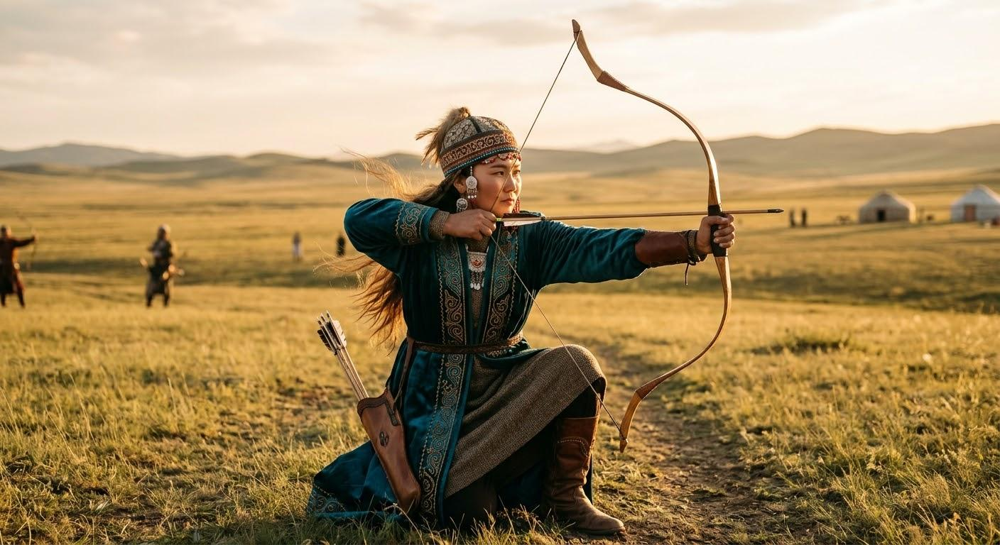
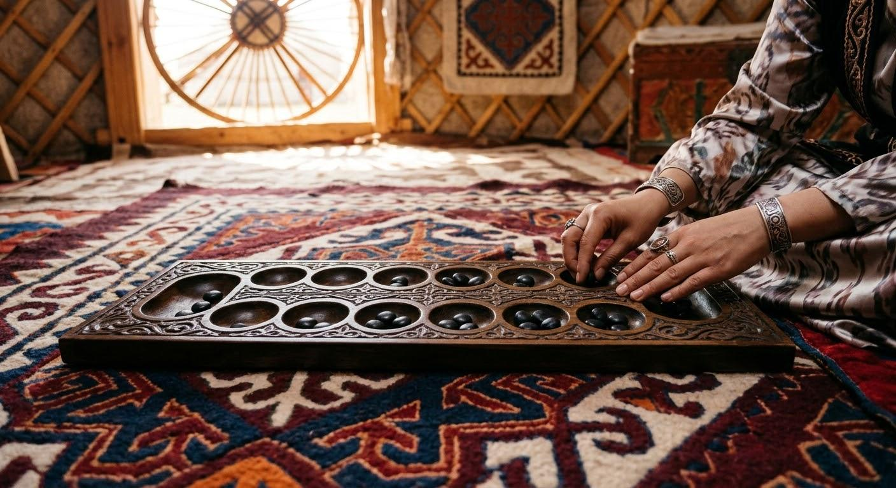

Интерактивті платформа
Виртуалды даладағы ұлттық ойындар

Асық ату
Импульс, соқтығысу, үйкеліс

Садақ ату
Гук заңы, энергия, баллистика

Арқан тарту
Ньютон заңдары, тыныштық үйкелісі

Тоғызқұмалақ
Логика және математика (бонус-режим)
Тоғызқұмалақ физикалық емес, логикалық ойын — ол жобада математикалық ойлауды дамытатын қосымша режим ретінде берілген.
06